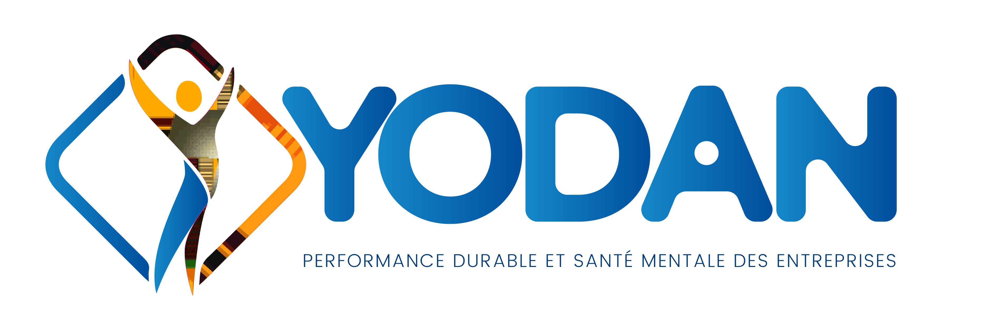

Votre profil
Catégorie ICJE
/ 27 points
Être accompagné(e)
Vous n'êtes pas seul(e). Un professionnel peut vous contacter, en toute confidentialité.
En savoir plus sur le jeu responsable
Entonnoir de l'accompagnement
Du test commencé à la prise en charge par l'équipe YODAN.
Demande d'appel et accompagnement
Proposés sur la page résultat : l'appel aux joueurs à risque (modéré, excessif), l'accompagnement au jeu excessif. « Non » et « Sans réponse » ne sont pas rappelés ; la personne reste libre d'appeler le 9999.
Niveaux de risque
Répartition des tests terminés selon la catégorie ICJE.
Distribution du score (0–27)
Suivi des dossiers
Les tests en zone verte sont clos : aucune action, comptés à part. Seuls les dossiers à risque demandent un suivi.
Évolution par semaine
Tests terminés par semaine, par niveau de risque.
Âge × niveau de risque
Part de chaque niveau dans la tranche d'âge (ligne = 100 %).
Sexe, zone et canal
Niveau de risque selon le profil et la source d'acquisition.
Villes et communes
Nombre de tests et part de joueurs à risque (modéré + excessif). À Abidjan, la commune est saisie à la place de la ville.
Plateformes citées
Nombre de tests et part de joueurs à risque (modéré + excessif).
Ce que disent les réponses
Part des tests ayant répondu « La plupart du temps » ou « Presque toujours ».
Complétion du test
Tests terminés ÷ tests commencés (étape « Informations » validée, questions non envoyées).
Équité d'accès
Part des demandes d'appel prises en charge, par groupe. Le trait vertical = moyenne générale.
Dossiers à risque YODAN uniquement
On n'appelle que les personnes qui ont demandé un appel. Le numéro s'affiche à la demande et chaque affichage est journalisé.
| Priorité | Dossier | Téléphone | Date du test | Ancienneté | Commune / ville | Âge · sexe | Plateforme | Score | Canal | Appel | Accomp. | Statut / action |
|---|
Historique et journaux internes YODAN uniquement
Actions de l'admin YODAN (compte unique) : quoi, quand, sur quel dossier. Lecture seule, sans téléphone, e-mail ni résultat de test.
Unité : tests, pas personnes (un même joueur peut refaire le test après 30 jours). Seul le test ICJE est pris en compte.